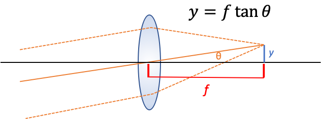
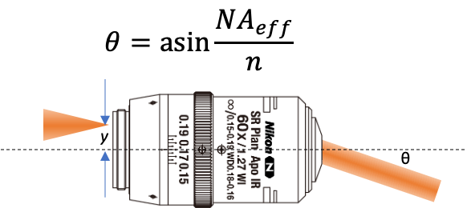

When designing an fluorescent microscope (or general optical system) one often wants to scan the beam position and/or angle at the sample (or object plane). It’s useful to remember that for any lens, especially for objective lenses, the back pupil plane is Fourier conjugate to the sample (object) plane of the lens.1 This has two important consequences for system design.
- A beam that is focused in the back pupil will be collimated at the object plane and vice versa. For instance, if you completely fill the back pupil of an objective with light (preferably overfilling it) then you will have a diffraction limited spot at the sample plane.2
- If the beam enters the back pupil at an angle relative to the optical axis the position at the sample plane will be shifted relative to the optical axis.
Basically: angle in the back pupil is position at the object plane and position in the back pupil is angle at the object plane.
Scanning the beam position

We can make a simple geometrical argument for this case (see figure above). The most important ray here is the chief ray (solid orange line) which passes through the center of the lens, the marginal rays (dashed orange lines) have been added for clarity. In this case we imagine a collimated beam of light entering the back aperture of an aplanatic lens at an angle $\theta$ with respect to the optical axis. The collimated (parallel) rays converge at the focal plane a distance $f$ away from the lens forming a spot at a perpendicular distance $y$ from the optical axis. We can relate these quantities together with the following equation based solely on geometrical reasoning:
$$ y = f \tan \theta $$
For simple lenses and large angles this equation doesn’t hold. But for specially designed optical systems, particularly scan lenses which are designed to specifically for this task, it can hold for very large angles and therefore fields of view.
Scanning the beam angle

Here we take a slightly different approach. We know that if we were to launch a ray parallel to the optical axis from the very edge of the objective’s back pupil then the ray exiting the front of the objective would make an angle $\theta$ with the optical axis such that $NA = n \sin \theta_{max}$ (the classic equation for numerical aperture). That means that if the ray were launched a distance $y$ from the optical axis that was less than half the pupil diameter we could define an effective NA as $NA_{eff} = y / f$ where $f$ is the focal length of the lens. We can derive this equation knowing that the pupil diameter is $D = 2 NA f$. This means we can solve for $\theta$ as a function of $y$.
$$ \theta = \sin^{-1} \left(\frac{y}{fn}\right) $$
Why aren’t the two equations the same?
I was surprised that these two equations would be different. The best explanation I can come up with is that for a well corrected, high magnification, system (such as a microscope objective) the entrance pupil (the pupil facing the object) is curved (in fact it lies on part of a spherical shell) while the exit pupil (the pupil facing infinity space) is flat. The entrance pupil has to be curved because a single point source (ignoring the fact that it’s an oscillating dipole) forms a spherical wave.
-
I’ll use sample plane and object plane interchangeably throughout. ↩︎
-
Approximately $\sigma’ \sigma = \frac{\lambda f}{\pi}$ ↩︎